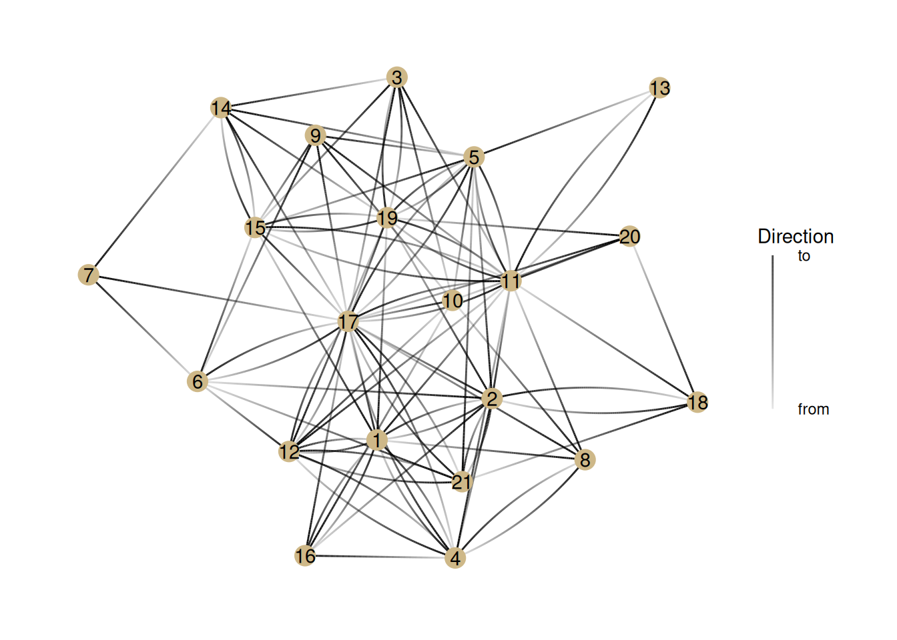
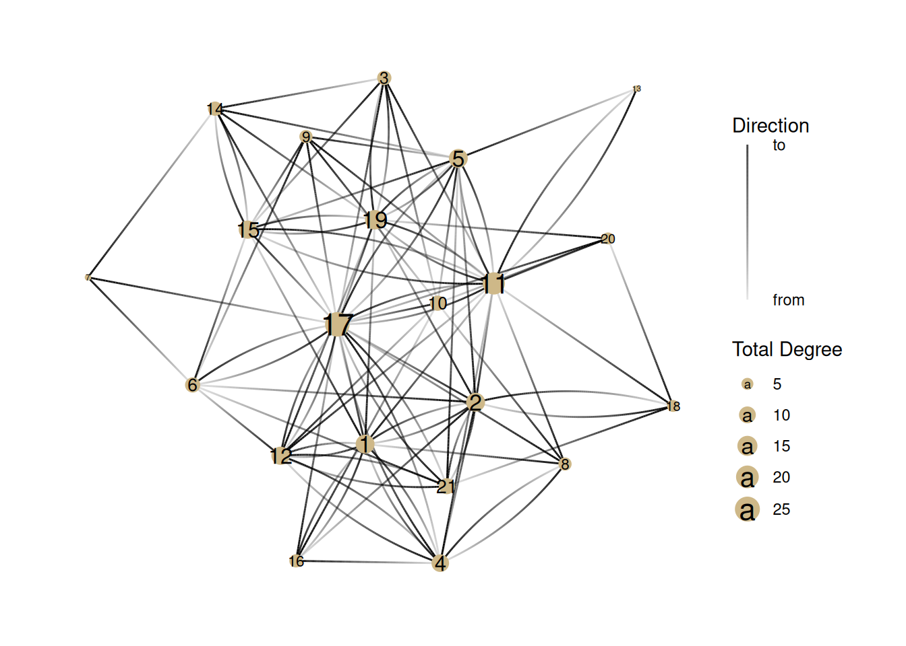
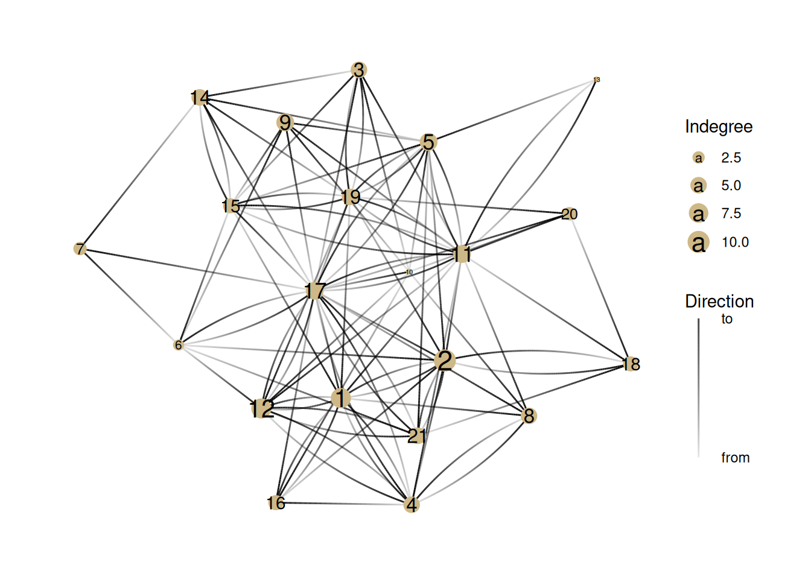
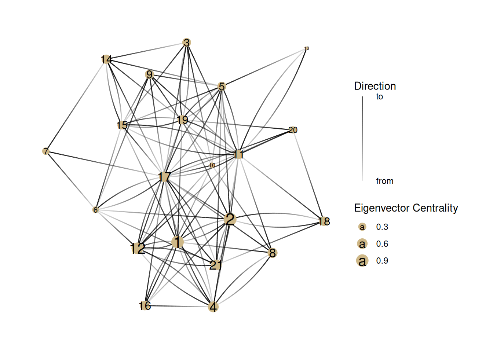
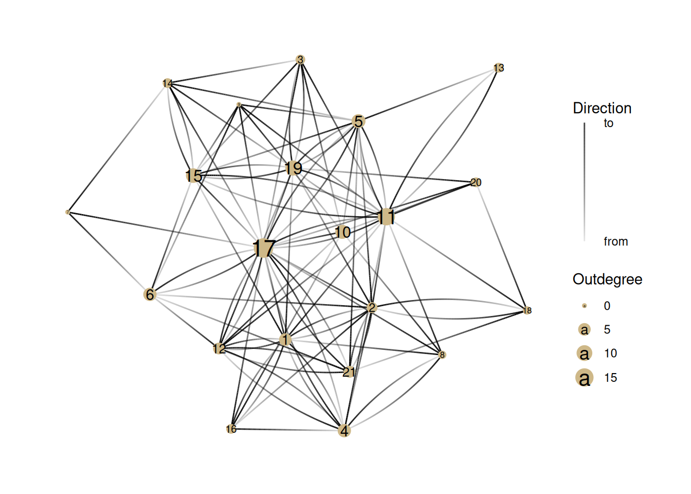
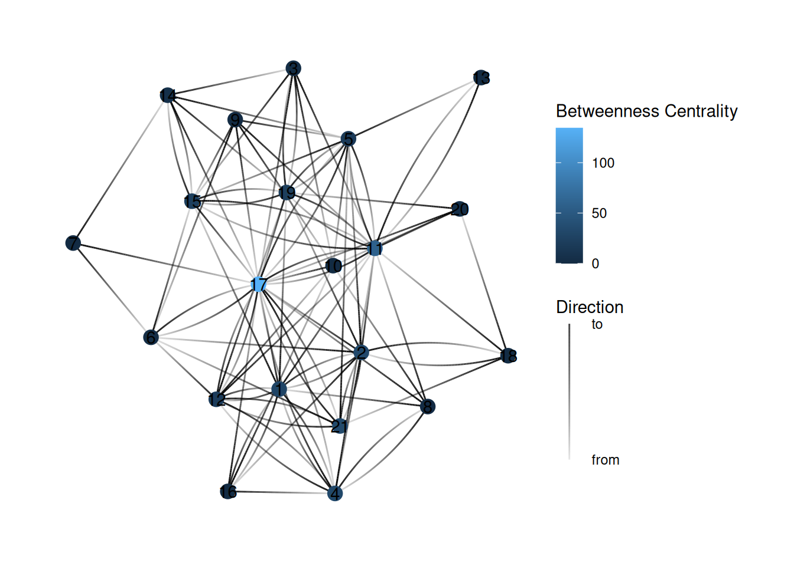
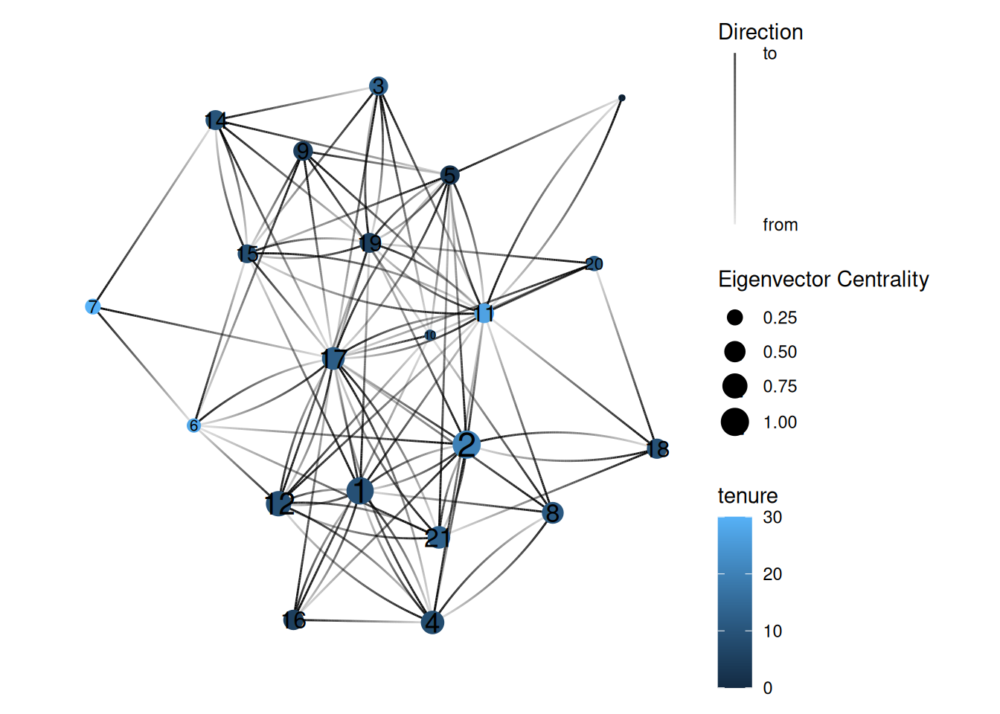

You have been building up skills and understanding about how ggraph works and now we’re ready to start building complex visualizations. Today we’ll work on different ways of showing power.
Power and networks
Power has long been a central concern of social scientists. The famous sociologist Max Weber defined it as the ability to control others or resources—to realize one’s will.
Some of this power comes in the form of “social capital”—the idea that there is power in our relationships—through mobilizing the resources of those we are connected to.
The construct of network power has many facets and over the years social network analysts have come up with a number of different algorithms for measuring different aspects of power in networks. These are usually called “centrality measures”. The intuition is that those in the center of a visualized network are typically those with the most power.
Degree centrality
Degree centrality is simply the number of connections that someone has. For directed networks, indegree can be interpreted as popularity and outdegree as gregariousness.
Let’s look at different measures of power in the ht_friends network. There are a few new things going on here, so I’ll walk through each line:
ht_friends |> as_tbl_graph(): Hopefully you know what these lines do—take the ht_friends network and make it into a tidygraph object.
activate(nodes) |> mutate(name = 1:nrow(.N())) adds a column called name to the nodes, which starts at the number one and goes to the number of nodes (nrow(.N())).
geom_edge_fan(aes(alpha = stat(index))): This is where things get a bit tricky. This creates edges using the geom_edge_fan style and sets the transparency (alpha) of an edge so that it’s darkest closest to the to node. It’s for helping us see the direction of directed edges.
geom_node_point(color = '#ceb888', size = 5): This should look familiar. It just sets a color and size for nodes
geom_node_text(aes(label = name)): This adds the labels we created earlier to the nodes. It just makes it easier for us to talk about individual nodes.
guides(edge_alpha = guide_edge_direction(title="Direction", labels = c('from', 'to'))) This adds a legend to the plot that tells us what the alpha (transparency) of the edges means.
G <- ht_friends |>as_tbl_graph() |>activate(nodes) |>mutate(name=1:nrow(.N()))G |>ggraph() +geom_edge_fan(aes(alpha =stat(index))) +# This does gradients for directed edgesgeom_node_point(color ='#ceb888', size =5) +geom_node_text(aes(label = name)) +# Adds labels to nodesguides(edge_alpha =guide_edge_direction(title="Direction", labels =c('from', 'to'))) # Adds the "Edge direction" legend

Now, let’s show the degree centrality by changing the size of nodes. Here is the total degree centrality. Note that we are using mutate to create the degree column, and then using it to adjust the size of the nodes.
G |>activate(nodes) |>mutate(degree =centrality_degree(mode ='all')) |>ggraph() +geom_edge_fan(aes(alpha =stat(index))) +# This does gradients for directed edgesgeom_node_point(aes(size = degree), color ='#ceb888') +geom_node_text(aes(label = name, size=degree *1.1)) +guides(edge_alpha =guide_edge_direction(title="Direction", labels =c('from', 'to'))) +# Adds the "Edge direction" legendscale_size(name='Total Degree') # Can you figure out what this is doing?

Note how this changes when we show indegree/popularity
G |>activate(nodes) |>mutate(degree =centrality_degree(mode ='in')) |>ggraph() +geom_edge_fan(aes(alpha =stat(index))) +# This does gradients for directed edgesgeom_node_point(aes(size = degree), color ='#ceb888') +geom_node_text(aes(label = name, size=degree *1.1)) +guides(edge_alpha =guide_edge_direction(title="Direction", labels =c('from', 'to'))) +# Adds the "Edge direction" legendscale_size_continuous(name='Indegree')

Closeness Centrality
This measure tries to capture how much a node is literally in the center of a graph. It is a measure of the average distance to each other node.
Note that there is a mode parameter that can be either ‘out’ for only outgoing distance, ‘in’, for incoming distance, or ‘all’, which we use, which ignores whether an edge is incoming or outgoing. If we don’t include the parameter, then it uses the default, which is ‘all’.
G |>activate(nodes) |>mutate(centrality =centrality_closeness(mode='all')) |>mutate(centrality =replace_na(centrality, 0)) |>ggraph() +geom_edge_fan(aes(alpha =stat(index))) +# This does gradients for directed edgesgeom_node_point(aes(size = centrality), color ='#ceb888') +geom_node_text(aes(label=name, size=centrality)) +guides(edge_alpha =guide_edge_direction(title="Direction", labels =c('from', 'to'))) +# Adds the "Edge direction" legendscale_size_continuous(name ="Closeness Centrality")
Betweenness Centrality
This measure counts the number of shortest paths that go through each node. This is based on the value of being in a “structural hole”.
Eigenvector centrality
The last important measure of centrality is eigenvector centrality. The calculation is complicated and based on matrix algebra but the concept is pretty simple: all else being equal, a node is more powerful if it’s connected to a node that’s well-connected.
This is actually the basis of Google’s original search algorithm, and is part of what made it successful.
G |>activate(nodes) |>mutate(centrality =centrality_eigen(directed =TRUE)) |>ggraph() +geom_edge_fan(aes(alpha =stat(index))) +# This does gradients for directed edgesgeom_node_point(aes(size = centrality), color ='#ceb888') +geom_node_text(aes(label = name, size = centrality *1.2)) +guides(edge_alpha =guide_edge_direction(title="Direction", labels =c('from', 'to'))) +# Adds the "Edge direction" legendscale_size_continuous(name ="Eigenvector Centrality")

Exercises
Now it’s your turn. How would you edit the code above to show outdegree centrality (or gregariousness)?

What can we learn about this network by comparing indegree and outdegree centrality? What nodes appear differently in the two visualizations? What might that tell us about how these people operate in this group?
YOUR ANSWER HERE
Look again at the graph of closeness centrality. Identify a few key differences in who has “power” in this network compared to the degree centrality networks. What kind of power might someone with high closeness centrality have in a network?
YOUR ANSWER HERE
Look again at one of the network graphs and guess which nodes will have the highest betweenness centrality.
YOUR ANSWER HERE
After you’ve done that, turn this into a code block (by adding “{r}” after the backticks) and then find the bug in the code below so that it colors the nodes based on betweenness centrality (So far we’ve been using the size of the node to represent centrality, but color is the other common way of showing centrality).

In the eigenvector graph, why does Node 12 have higher eigenvector centrality than Node 6? Why does node 10 have such low eigenvector centrality? What does eigenvector centrality measure about power that other measures miss?
YOUR ANSWER HERE
It can be instructive to combine measures of centrality with attributes of the nodes in the network. Show the eigenvector centrality graph again, but this time color the nodes based on their tenure at the company.

What does this visualization tell you about the relationship between tenure and power in this network?